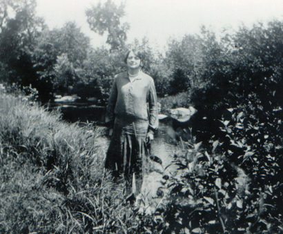
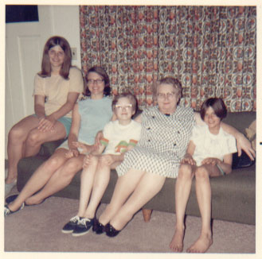

| Alice Minerva Anderson was born on the 3rd of September, 1902 in Nelsonville, WI. On the 16th of February, 1927 she wed Obert Almer Wogsland in Nelsonville, WI. Together they had four children. |

|
|

(L to R) Becky, Dell, Nancy, Alice,and Lori. |
In 1948 Alice and Obert moved to Fort Atkinson, WI. She worked at the Fort Fur Co. Her granchildren called her by two different names: nonnie (Sylvia's kids), and grandma (Neal's kids). She lost her husband Obert during the Summer of 1980. Alice died on the 23rd of September, 1981 in Fort Atkinson, WI. |